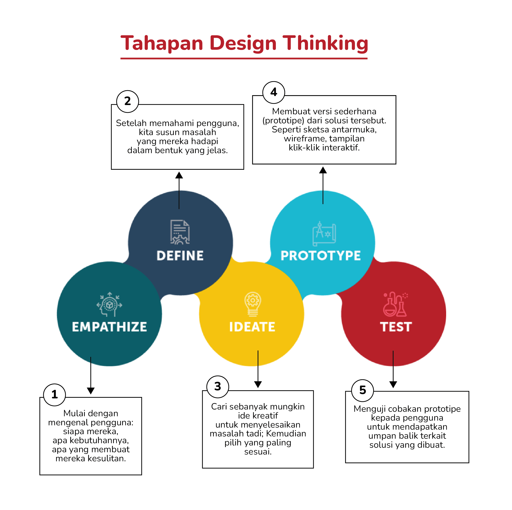

1) User Centered Design (UCD)
UCD atau User-Centered Design adalah metode desain yang mengutamakan kebutuhan, tujuan, dan pengalaman pengguna. Jadi, saat kita merancang antarmuka UI atau pengalaman pengguna (UX), kita tidak hanya memikirkan bagaimana desain yang estetik, tetapi juga memastikan bahwa pengguna dapat merasa nyaman, mudah paham, dan puas saat menggunakannya.
Dengan UCD, kita diajak untuk benar-benar memahami siapa pengguna kita, apa kebutuhan dan masalah mereka,
lalu menciptakan solusi desain yang sesuai.

2) Design Thinking
Design Thinking merupakan suatu pendekatan kreatif yang digunakan untuk inovasi dan pemecahan masalah, dengan mengambil perspektif serta proses desain dan menekankan pada pemahaman yang utamanya harus didasari pada empati dan observasi. Dalam Design Thinking, kita akan mempelajari cara untuk merancang solusi yang tepat bagi pengguna.
Metode Design Thinking memiliki lima tahapan yang terarah, yaitu Empathize (berempati), Define (mendefinisikan), Ideate (mengideakan), Prototype (membuat prototipe), dan Test (menguji).
3) Design Sprint
Design Sprint adalah metode inovatif yang dirancang untuk menyelesaikan masalah dan menciptakan solusi produk secara cepat hanya dalam waktu lima hari. Dikembangkan oleh Jake Knapp dari Google Ventures pada tahun 2010, dan kini banyak digunakan karena efisien dalam waktu dan biaya dibanding metode konvensional. Dengan pendekatan terstruktur, Design Sprint membantu tim mendapatkan umpan balik nyata dari pengguna lebih awal sebelum mengembangkan produk secara penuh.